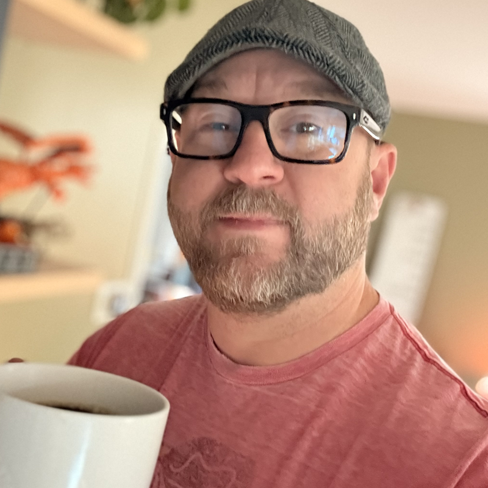

A little bit about myself.
Call it a background check.



If you go back far enough you get stories of me at eight years old walking around with a bag of 60-plus Crayola markers, willing to draw on anything. My parents probably would have been early adopters of Washable Crayola. I colored the walls more than once.
High school was two years sneaking into the art studio, then two years never leaving. Painting and sculpture were my thing. Graphic design became my path from canvas to screen. Twenty-five-plus years later I'm still designing things, still looking for a good team and good culture, and still trying to add value with work that actually matters to the people using it.
A department runs well when the basics are solid: process, documentation, scope clarity, cross-functional trust. Those things let designers do their best work without burning out or reinventing the wheel every sprint. Single source of record, great communication. And before you open anyone up to being challenged, you take the time to understand your people, understand the gaps, and earn their trust first.
I also believe the best design leaders stay close to the craft. I've been lucky enough to always be close enough to knock out a few concepts myself. It helps me understand the challenges my team is facing and see the issues before they become blockers. I still sketch. I still push pixels when it matters. I still sit in the room when the hard UX problem needs to be solved. I don't see that as a weakness in a director. It keeps me close to the direction of the work and gives me enough context to support my designers when they concept, present, and problem solve. That's what makes a better manager and mentor.
My first real use of AI wasn't for design — it was for my team. I wrote short impressions of each person, combined that with their previous goals, and asked AI to help me build the next set. It got me 80% of the way there before I'd finished my coffee. That was the moment I understood what AI actually is: a thinking partner that eliminates the blank page and compresses the distance between intention and direction.
The tools I reach for — Figma's Make AI, Lovable — have worked best when they're working from something that already exists. A defined design system. Established architecture. Years of decisions already baked in. That context is what has helped our AI separate its output from generic proof of concepts. Within that structure, AI has meaningfully accelerated ideation, tightened the handoff between design and product, and let teams explore in hours what used to take weeks. It's also shown me its limits: the deeper and more specific the system, the more effort it can be for AI to operate at the required precision. That gap still requires a trained eye, accumulated context, and the kind of judgment you can't prompt your way to.
Looking forward, what excites me most isn't AI replacing design work — it's AI putting new product creation into a different gear entirely. The distance from idea to market is collapsing. Prompting agents to execute large-scale effort in hours rather than weeks is real, and I want to be building in that space. The teams I want to lead next are ones where design, architecture, and AI capability are working together from day one — not bolted on after the fact. That's where the interesting work is going to happen.
I'd like to think we all want life to be smooth sailing, at home and at work. I put in the time to find that balance, and I bring that same intention to every team I join. At work I like to stop myself or my team and ask "what exactly are we solving for?" It gets everyone to pause, be intentional, and make sure the conversation or the work is headed somewhere worth going.
And then in life, in a very similar fashion, I lean on Ferris. "Life moves pretty fast. If you don't stop and look around once in a while, you could miss it." Still true. Still relevant. Still my reminder to pay attention.